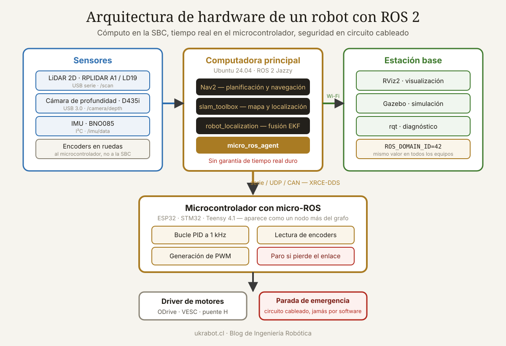

Qué cubre esta guía
- Qué significa realmente "compatible con ROS 2"
- La computadora principal
- LiDAR: el sensor que define la navegación
- Cámaras y percepción visual
- Unidades inerciales y odometría
- Control de motores y ros2_control
- micro-ROS: microcontroladores dentro del grafo
- Tres configuraciones completas y probadas
- Red y DDS: el problema que nadie anticipa
- Conclusión
- Preguntas frecuentes
Qué significa realmente "compatible con ROS 2"
Un fabricante puede anunciar su sensor como compatible con ROS 2 porque alguien publicó un paquete en GitHub hace tres años. Eso no es compatibilidad; es una promesa incumplida esperando a que la descubras.
| Nivel | Qué encuentras | Trabajo que te espera |
|---|---|---|
| Oficial en la distribución | Paquete instalable con apt desde los repositorios de ROS | Ninguno: instalar y configurar |
| Mantenido por el fabricante | Repositorio activo con soporte de la versión actual | Compilar desde fuentes |
| Comunidad activa | Repositorio con commits recientes e issues respondidos | Compilar y posiblemente adaptar |
| Puerto abandonado | Código para ROS 1 o para una distribución antigua | Migración completa: días o semanas |
| Solo SDK | Biblioteca en C++ o Python sin envoltorio ROS | Escribir el nodo tú mismo |
| Nada | Protocolo propietario sin documentar | Ingeniería inversa; evítalo |
Verificación antes de comprar
- Busca el paquete en index.ros.org y comprueba si aparece para tu distribución concreta.
- Si no está, busca el repositorio en GitHub y mira la fecha del último commit. Más de un año sin actividad es señal de alarma.
- Revisa los issues abiertos: si hay varios reportando que no compila en la distribución actual y nadie responde, el paquete está muerto.
- Comprueba que el
package.xmldeclare la versión de ROS 2 y no sea un paquete de ROS 1 renombrado. - Busca en Robotics Stack Exchange y en el foro de ROS Discourse el nombre del dispositivo: si nadie lo ha usado, serás el primero en encontrar los problemas.
La computadora principal
ROS 2 se ejecuta oficialmente sobre Ubuntu, y cada distribución de ROS está atada a una versión concreta del sistema operativo.
| Distribución ROS 2 | Ubuntu | Tipo | Fin de soporte |
|---|---|---|---|
| Humble Hawksbill | 22.04 LTS | LTS | Mayo de 2027 |
| Iron Irwini | 22.04 LTS | No LTS | Finalizado |
| Jazzy Jalisco | 24.04 LTS | LTS | Mayo de 2029 |
| Kilted Kaiju | 24.04 LTS | No LTS | Ciclo corto |
Opciones de hardware
| Plataforma | CPU | RAM | Consumo | Adecuada para |
|---|---|---|---|---|
| Raspberry Pi 4 (4-8 GB) | 4× Cortex-A72 1,8 GHz | 4-8 GB | 3-7 W | Robots simples, LiDAR 2D, teleoperación |
| Raspberry Pi 5 | 4× Cortex-A76 2,4 GHz | 4-16 GB | 5-12 W | Navegación 2D con SLAM, buen punto de partida |
| Orange Pi 5 Plus | 4× A76 + 4× A55 | 4-16 GB | 7-15 W | Percepción moderada, NPU de 6 TOPS |
| Jetson Orin Nano | 6× Cortex-A78AE | 4-8 GB | 7-15 W | Visión con redes neuronales, SLAM visual |
| Jetson Orin NX | 8× Cortex-A78AE | 8-16 GB | 10-25 W | Percepción 3D exigente, varias cámaras |
| Mini PC x86 (N100 o similar) | 4 núcleos Intel | 8-32 GB | 6-20 W | Máxima compatibilidad de paquetes |
| Portátil de desarrollo | x86-64 | 16 GB o más | — | Estación base, simulación, Gazebo |
Si te inclinas por una placa ARM potente, la comparativa de la Orange Pi 5 Plus para edge computing detalla las prestaciones de la plataforma RK3588.
LiDAR: el sensor que define la navegación
LiDAR 2D
Es el punto de entrada a la navegación autónoma y sigue siendo suficiente para la mayoría de los robots de interior.
| Modelo | Alcance | Frecuencia | Puntos/s | Estado del controlador |
|---|---|---|---|---|
| RPLIDAR A1 | 12 m | 5,5 Hz | 8.000 | Oficial y maduro |
| RPLIDAR A2M12 | 12 m | 10 Hz | 16.000 | Oficial y maduro |
| RPLIDAR A3 | 25 m | 10-15 Hz | 16.000 | Oficial y maduro |
| RPLIDAR S2 | 30 m | 10 Hz | 32.000 | Oficial |
| YDLIDAR X4 / G4 | 10-16 m | 7-12 Hz | 5.000-9.000 | Mantenido por el fabricante |
| LDROBOT LD19 / STL-19P | 12 m | 10 Hz | 4.500 | Comunidad; muy económico |
| Hokuyo UST-10LX | 10 m | 40 Hz | 43.000 | Oficial; grado industrial |
Para empezar, un RPLIDAR A1 o un LD19 cuestan poco, funcionan sin sorpresas y son suficientes para SLAM 2D con slam_toolbox y navegación con Nav2. La diferencia frente a modelos superiores se nota en espacios grandes y a velocidades altas, no en un robot de interior a medio metro por segundo.
LiDAR 3D
| Modelo | Canales | Alcance | Campo vertical | Controlador |
|---|---|---|---|---|
| Livox Mid-360 | Patrón no repetitivo | 40-70 m | −7° a 52° | Oficial (livox_ros_driver2) |
| Unitree 4D L1 | Rotatorio | 30 m | 360° × 90° | Fabricante |
| Ouster OS1 | 32-128 | 120 m | 45° | Oficial y excelente |
| Velodyne VLP-16 | 16 | 100 m | 30° | Oficial y maduro |
| RoboSense Helios | 16-32 | 150 m | 31-70° | Fabricante |
Cámaras y percepción visual
| Cámara | Tecnología | Alcance útil | IMU | Soporte ROS 2 |
|---|---|---|---|---|
| Intel RealSense D435i | Estéreo activo | 0,3 - 3 m | Sí | Oficial, muy usado |
| Intel RealSense D455 | Estéreo activo | 0,6 - 6 m | Sí | Oficial |
| Luxonis OAK-D | Estéreo + VPU | 0,4 - 12 m | Según modelo | Oficial (depthai-ros) |
| Stereolabs ZED 2i | Estéreo pasivo | 0,3 - 20 m | Sí | Oficial; requiere GPU NVIDIA |
| Orbbec Astra / Gemini | Estéreo o luz estructurada | 0,6 - 8 m | Según modelo | Fabricante |
| Cámara USB genérica UVC | RGB monocular | — | No | Oficial (usb_cam, v4l2_camera) |
| Cámara Raspberry Pi CSI | RGB monocular | — | No | Comunidad (camera_ros con libcamera) |
Consideraciones prácticas
- Ancho de banda USB: una RealSense a resolución completa satura un puerto USB 3.0. Dos cámaras en el mismo controlador USB compiten por el bus y producen pérdida de fotogramas. Verifica la topología con
lsusb -t. - Las cámaras de profundidad no ven cristal ni superficies muy reflectantes o completamente negras. En entornos con esos elementos, complementa con LiDAR o con sensores de ultrasonidos.
- Luz solar directa anula las cámaras de estéreo activo por infrarrojos. Para exterior, estéreo pasivo o LiDAR.
- Sincronización temporal: si fusionas cámara e IMU, las marcas de tiempo deben ser coherentes. Las cámaras con IMU integrada y sincronización por hardware evitan un problema difícil de depurar.
Unidades inerciales y odometría
| Sensor | Ejes | Interfaz | Fusión interna | Nota |
|---|---|---|---|---|
| MPU-6050 | 6 | I²C | DMP limitado | Barato; deriva notable |
| MPU-9250 | 9 | I²C / SPI | DMP | Descatalogado, aún común |
| ICM-20948 | 9 | I²C / SPI | DMP | Sucesor del MPU-9250 |
| BNO055 | 9 | I²C / UART | Sí, cuaternión listo | Ideal para empezar |
| BNO085 / BNO086 | 9 | I²C / SPI / UART | Sí, muy buena | Recomendado actualmente |
| BMI088 | 6 | SPI | No | Baja deriva; usado en drones |
| Xsens MTi series | 9 | USB / serie | Sí, grado industrial | Coste elevado |
Para un robot terrestre, un BNO085 resuelve el problema con elegancia: entrega orientación en cuaterniones ya fusionada y calibrada, sin que tengas que implementar un filtro de Madgwick ni pelearte con la calibración del magnetómetro.
Odometría de ruedas
La fuente de odometría más fiable en interiores sigue siendo el encoder en las ruedas, fusionado con la IMU mediante robot_localization.
Cálculo de resolución de odometría:
Encoder de 1000 pulsos por vuelta, en cuadratura → 4000 cuentas
Reductora 30:1 → 120.000 cuentas por vuelta de rueda
Rueda de 100 mm de diámetro → perímetro 314,16 mm
Resolución lineal = 314,16 / 120.000 = 0,0026 mm por cuenta
Sobra con enorme margen. El error real no viene de la
resolución sino del deslizamiento de las ruedas, de la
imprecisión del diámetro y de la distancia entre ejes.La selección de encoders y su montaje se trata en detalle en la guía de encoders para retroalimentación de posición.
Control de motores y ros2_control
ros2_control es el marco estándar para la capa de actuación. Su valor está en separar la lógica de control del hardware concreto: escribes una interfaz de hardware una vez y puedes cambiar de controlador sin tocar la navegación.
| Controlador | Motores | Interfaz | Integración con ROS 2 |
|---|---|---|---|
| ODrive | BLDC, 2 ejes | USB / CAN / UART | Paquete de la comunidad, activo |
| Roboteq | CC con escobillas | USB / CAN / serie | Paquete del fabricante |
| RoboClaw | CC con escobillas | USB / serie | Comunidad |
| Dynamixel | Servos inteligentes | TTL / RS-485 | Oficial y excelente |
| VESC | BLDC | USB / CAN | Comunidad; usado en F1TENTH |
| Puente H genérico (TB6612, BTS7960) | CC | PWM | Vía microcontrolador con micro-ROS |
| Servoaccionamiento industrial | Servo CA | EtherCAT | ethercat_driver_ros2 |
Estructura mínima de una interfaz de hardware en ros2_control:
class MiRobotHardware : public hardware_interface::SystemInterface
{
on_init() → leer parámetros del URDF
export_state_interfaces() → posición y velocidad leídas
export_command_interfaces() → velocidad o esfuerzo a escribir
read() → obtener datos del hardware cada ciclo
write() → enviar comandos al hardware cada ciclo
};
El controlador (diff_drive_controller, joint_trajectory_controller...)
se apoya en esas interfaces sin conocer el hardware concreto.diff_drive_controller más una interfaz de hardware propia es el camino estándar. El controlador se encarga de la cinemática, la publicación de odometría y la transformada correspondiente; tú solo escribes la lectura de encoders y la escritura de velocidades.micro-ROS: microcontroladores dentro del grafo
Ninguna computadora con Linux puede garantizar tiempo real duro sin configuración especializada. La arquitectura que funciona reparte responsabilidades: la SBC hace percepción y planificación, y un microcontrolador se encarga del bucle de control con determinismo. micro-ROS conecta ambos mundos haciendo que el microcontrolador aparezca como un nodo más del grafo.
| Microcontrolador | Núcleo | RAM | Soporte micro-ROS | Nota |
|---|---|---|---|---|
| ESP32 / ESP32-S3 | Xtensa LX6/LX7 | 320-512 KB | Oficial | Wi-Fi integrado; la opción más accesible |
| Teensy 4.1 | Cortex-M7 600 MHz | 1 MB | Comunidad | Muy rápido; Ethernet opcional |
| STM32 F4/F7/H7 | Cortex-M4/M7 | 192 KB - 1 MB | Oficial | Estándar en la industria |
| Raspberry Pi Pico / Pico 2 | Cortex-M0+/M33 | 264-520 KB | Comunidad | Barato; PIO muy útil para encoders |
| Arduino Portenta H7 | Cortex-M7 + M4 | 1 MB | Oficial | Doble núcleo |
Arquitectura completa:
┌─────────────────────────────┐
│ SBC con Ubuntu + ROS 2 │
│ · Nav2 · SLAM · percepción │
│ · micro_ros_agent │
└───────────┬─────────────────┘
│ serie / UDP / CAN
┌───────────┴─────────────────┐
│ MCU con micro-ROS │
│ · Bucle PID a 1 kHz │
│ · Lectura de encoders │
│ · Generación de PWM │
│ · Parada de emergencia │
└─────────────────────────────┘
El agente (micro_ros_agent) traduce entre el protocolo
XRCE-DDS del microcontrolador y el DDS completo de ROS 2.
Sin el agente en marcha, el MCU no aparece en el grafo.Si eliges ESP32 como microcontrolador de control, el reparto de tareas entre sus dos núcleos es directamente aplicable: la guía sobre usar los dos núcleos del ESP32 explica cómo aislar el bucle de control de la pila de red.
Tres configuraciones completas y probadas
Configuración de aprendizaje
| Elemento | Elección | Razón |
|---|---|---|
| Computadora | Raspberry Pi 5 de 8 GB | Ecosistema enorme, documentación abundante |
| LiDAR | RPLIDAR A1 o LD19 | Controlador oficial, coste mínimo |
| IMU | BNO085 | Fusión interna, sin filtros que implementar |
| Control de motores | ESP32 con micro-ROS y TB6612 | Determinismo a bajo coste |
| Base | Chasis diferencial con encoders | Cinemática simple y bien soportada |
| Software | Humble + Nav2 + slam_toolbox | Combinación con más tutoriales disponibles |
Configuración de desarrollo serio
| Elemento | Elección | Razón |
|---|---|---|
| Computadora | Mini PC N100 o Jetson Orin Nano | Compatibilidad total o aceleración de inferencia |
| LiDAR | RPLIDAR S2 o Livox Mid-360 | Alcance y densidad para espacios grandes |
| Cámara | RealSense D435i u OAK-D | Percepción de obstáculos bajos y detección |
| IMU | La de la cámara o BMI088 dedicada | Sincronización por hardware |
| Control de motores | ODrive o VESC | Control de par de calidad sobre BLDC |
| Software | Jazzy + Nav2 + RTAB-Map | Soporte largo y SLAM tridimensional |
Configuración de brazo manipulador
| Elemento | Elección | Razón |
|---|---|---|
| Computadora | Mini PC x86 con 16 GB | MoveIt consume memoria y CPU |
| Actuadores | Dynamixel serie X | Integración oficial impecable con ros2_control |
| Cámara | RealSense D405 montada en muñeca | Diseñada para distancias cortas |
| Sensor de fuerza | Celda de carga con HX711 o sensor 6 ejes | Control de contacto |
| Software | Jazzy + MoveIt 2 | Planificación con evitación de colisiones |
Red y DDS: el problema que nadie anticipa
ROS 2 usa DDS para la comunicación, y su comportamiento por defecto descubre automáticamente todos los nodos de la red local. Eso es cómodo en el escritorio y problemático en un laboratorio compartido.
# Aislar tu robot del resto de la red
export ROS_DOMAIN_ID=42 # entre 0 y 101; mismo valor en todos los equipos
# Limitar el descubrimiento al propio equipo (útil para pruebas)
export ROS_LOCALHOST_ONLY=1
# Elegir implementación de DDS
export RMW_IMPLEMENTATION=rmw_cyclonedds_cpp # o rmw_fastrtps_cpp| Problema | Síntoma | Solución |
|---|---|---|
| Wi-Fi con tráfico multicast | Descubrimiento lento o intermitente | Configurar DDS en modo unicast con lista de pares |
| Muchos nodos en la misma red | Consumo alto de CPU sin hacer nada | Separar por ROS_DOMAIN_ID |
| Imágenes por Wi-Fi | Saturación del enlace | Comprimir con image_transport; procesar a bordo |
| Cortafuegos activo | Los nodos no se ven entre equipos | Abrir los puertos UDP de DDS |
| Relojes desincronizados | Errores de transformada por marcas de tiempo | Sincronizar con chrony o PTP |
Conclusión
La pregunta correcta al elegir hardware para ROS 2 no es cuánto rinde el dispositivo, sino quién mantiene su controlador y cuándo fue el último commit. Un LiDAR de gama media con paquete oficial te permitirá tener un robot navegando este fin de semana; uno excelente con un puerto abandonado te tendrá dos meses escribiendo código de driver.
La arquitectura que funciona en la práctica reparte el trabajo según lo que cada componente hace bien: una computadora con Linux para percepción y planificación, donde el determinismo no es crítico, y un microcontrolador con micro-ROS para el bucle de control, donde sí lo es. Intentar cerrar un lazo de control a un kilohercio desde un nodo de Python sobre Ubuntu es una fuente inagotable de comportamientos extraños.
Y un consejo que ahorra semanas: empieza con la configuración más aburrida y mejor documentada que puedas. Raspberry Pi, RPLIDAR A1, chasis diferencial y Humble. Cuando ese robot navegue de forma fiable habrás aprendido dónde están los problemas reales, y estarás en condiciones de justificar cada componente más caro que añadas después.
Preguntas frecuentes
¿Puedo usar ROS 2 en una Raspberry Pi?
Sí, y es una plataforma perfectamente válida para robots de interior con navegación bidimensional. Una Raspberry Pi 4 con 4 gigabytes ejecuta Nav2 con un LiDAR 2D sin dificultad, y la Pi 5 amplía el margen de forma notable. Los límites aparecen con la percepción tridimensional, el SLAM visual y la inferencia de redes neuronales, donde la falta de aceleración por hardware se nota. Para esos casos conviene una Jetson o un mini PC x86. Instala Ubuntu Server de 64 bits, no Raspberry Pi OS, para tener paquetes binarios de ROS 2 disponibles.
¿Qué distribución de ROS 2 debo elegir en 2026?
Jazzy Jalisco sobre Ubuntu 24.04 si empiezas un proyecto nuevo, porque tiene soporte hasta mayo de 2029. Humble Hawksbill sobre Ubuntu 22.04 sigue siendo una elección sólida si dependes de paquetes de terceros que aún no han migrado, ya que su ecosistema es el más amplio y su soporte se extiende hasta 2027. Evita las distribuciones no LTS como Iron o Kilted salvo que necesites una característica concreta: su ciclo de vida de un año obliga a migraciones constantes.
¿Necesito un microcontrolador además de la computadora principal?
Para cualquier robot con motores, sí es muy recomendable. Linux no ofrece garantías de tiempo real sin un núcleo con parche PREEMPT_RT y configuración cuidadosa, por lo que un bucle de control a un kilohercio ejecutado como nodo normal sufrirá variaciones de latencia impredecibles. Delegar el control de bajo nivel a un microcontrolador con micro-ROS proporciona determinismo, libera a la computadora principal y añade una capa de seguridad, ya que el microcontrolador puede detener los motores si pierde comunicación con la computadora.
¿Merece la pena una Jetson frente a un mini PC x86?
Depende de si vas a ejecutar inferencia de redes neuronales. Si tu robot necesita detección de objetos, segmentación semántica o SLAM visual denso, la GPU de la Jetson marca una diferencia enorme y justifica su precio. Si tu percepción se limita a LiDAR bidimensional y odometría, un mini PC con procesador N100 cuesta menos, consume una potencia comparable, ofrece mayor compatibilidad de paquetes binarios y no te ata al ecosistema de JetPack, que condiciona la versión de Ubuntu que puedes usar.
¿Cómo verifico que un sensor es realmente compatible antes de comprarlo?
Busca el paquete en index.ros.org filtrando por tu distribución concreta. Si no aparece, localiza el repositorio en GitHub y comprueba la fecha del último commit, los issues abiertos sin respuesta y si el package.xml declara realmente ROS 2. Consulta también Robotics Stack Exchange y el foro ROS Discourse buscando el modelo exacto: si nadie ha publicado nada sobre él, asume que serás quien descubra los problemas. Un repositorio sin actividad en más de un año debe considerarse abandonado.
¿Puedo mezclar dispositivos de ROS 1 con ROS 2?
Sí, mediante el paquete puente ros1_bridge, que traduce mensajes entre ambas versiones para los tipos estándar. Funciona razonablemente bien pero añade latencia, exige mantener las dos instalaciones conviviendo y no cubre los tipos de mensaje personalizados sin trabajo adicional de compilación. Es una solución de transición aceptable mientras migras, no una arquitectura para mantener a largo plazo, sobre todo considerando que ROS 1 Noetic ya alcanzó el final de su soporte.
Este artículo es contenido editorial independiente: no contiene ubicaciones patrocinadas ni enlaces de afiliado. Si en futuras actualizaciones se agregan enlaces a proveedores de componentes, serán identificados explícitamente. El código y las conexiones son referenciales y deben adaptarse y probarse con tu propio hardware. Si detectas un error en esta guía, por favor avísanos.
Sigue aprendiendo
Profundiza en la parte de cómputo con la comparativa de la Orange Pi 5 Plus, y en el control de bajo nivel con la guía de los dos núcleos del ESP32.
Fuentes primarias y lecturas recomendadas
Documentación oficial de ROS 2 y de los paquetes de controlador citados. Verifica siempre el soporte para tu distribución concreta antes de comprar hardware.
- ROS 2 — Documentación oficial y lista de distribuciones
- ROS Index — Buscador de paquetes por distribución
- ros2_control — Documentación del marco de control
- micro-ROS — Documentación oficial y plataformas soportadas
- Nav2 — Pila de navegación para ROS 2
- MoveIt 2 — Marco de planificación de movimiento
- ROS Discourse — Foro oficial de la comunidad
Enlaces revisados: 15 de agosto de 2026.